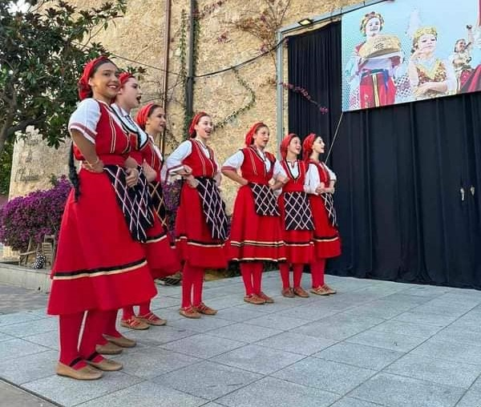

Хоби и патувања
Уште од мала бев воодушевена од старата македонска носија и фолклор, при што тоа воодушевување придонесе да започнам со моето хоби
уште од 8 годишна возраст. Се зачленив во
Фолклорниот асамбал „Ацо Ѓорчев“-Неготино
и бев член околу 10 години, но поради здравствени причини бев приморана да кажам збогум на асамблот. Но тоа не ме запре да продолжам да ја следам
мојата љубов кон фолколорот и народната носија.
